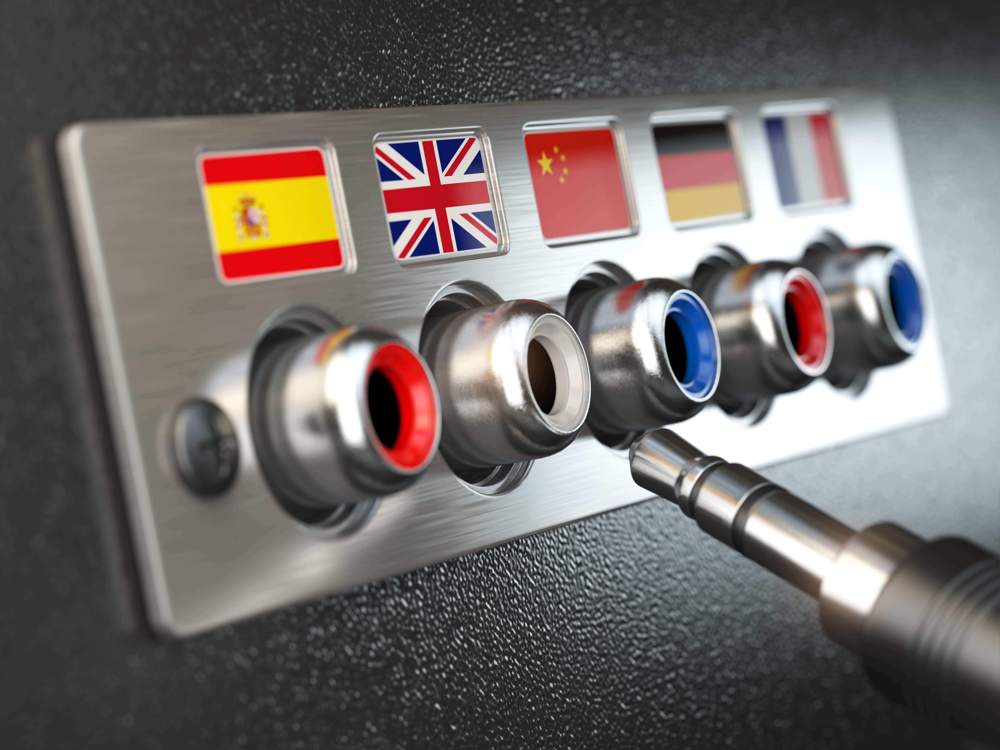
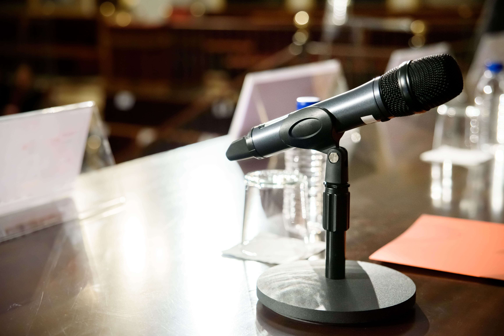

Established 1993
Основана 1993
Language services built on trust, precision, and experience.
Јазични услуги изградени врз доверба, прецизност и долгогодишно искуство.
DARFILD dooel Skopje helps companies, institutions, and individuals communicate clearly across languages through professional translation, interpretation, transcription, subtitling, and interpretation equipment support.
ДАРФИЛД дооел Скопје им помага на компании, институции и поединци да комуницираат јасно на повеќе јазици преку професионален превод, толкување, транскрипција, титлување и поддршка со опрема за толкување.


About Darfild
За Дарфилд
A long-standing partner for clear international communication.
Долгогодишен партнер за јасна меѓународна комуникација.
In today's interconnected world, effective communication transcends borders and languages. Whether you're a global corporation, a non-profit organization, or an individual seeking to connect with people from diverse backgrounds, a reliable translation and interpretation company is essential. That's where our company, DARFILD dooel Skopje, comes into play.
Во денешниот меѓусебно поврзан свет, ефективната комуникација ги надминува границите и јазиците. Без разлика дали сте глобална корпорација, непрофитна организација или поединец кој сака да се поврзе со луѓе од различно потекло, соработката со сигурна компанија за превод и толкување е од суштинско значење. Токму тука, на сцена стапува компанијата ДАРФИЛД дооел Скопје.
Established in 1993, DARFILD has been at the forefront of the translation and interpretation industry, tirelessly serving both local and international clients. Our journey, spanning three decades, is a testament to our unwavering commitment to breaking down language barriers and fostering meaningful connections across the globe.
Основана во 1993 година, DARFILD е во првите редови на индустријата за превод и толкување, обезбедувајќи услуги за локалните и меѓународните клиенти. Нашето патување, кое опфаќа три децении, е доказ за нашата непоколеблива посветеност да ги рушиме јазичните бариери и да негуваме значајни врски низ целиот свет.
For the past 30 years, DARFILD has been dedicated to providing exceptional language services that enable businesses and individuals to thrive in an increasingly interconnected world. Our extensive experience in translation and interpretation has not only sharpened our skills but has also deepened our understanding of the unique needs of our diverse clientele.
Во изминатите 30 години, ДАРФИЛД е посветен на обезбедување исклучителни јазични услуги, кои им овозможуваат на фирмите и поединците да напредуваат, во сè повеќе меѓусебно поврзаниот свет. Нашето долгогодишно искуство во преводот и толкувањето, не само што ги изостри нашите вештини, туку и го продлабочи нашето разбирање за уникатните потреби на нашите разновидни клиенти.
Our services
Наши услуги
Practical language solutions for business, institutions, and individuals.
Практични јазични решенија за компании, институции и поединци.
DARFILD offers a range of professional language services for different communication needs.
ДАРФИЛД нуди широк опсег на професионални јазични услуги за различни комуникациски потреби.
Translation Services Преведувачки услуги
Our team of professional translators is fluent in a wide array of languages, ensuring that your content is accurately and effectively translated. Whether you need legal documents, marketing materials, technical manuals, or medical reports translated, we have the expertise to deliver precise and culturally sensitive translations.
Нашиот тим од професионални преведувачи течно ги владее сите регионални и други светски јазици, осигурувајќи дека вашата содржина е прецизно и ефективно преведена. Без разлика дали Ви е потребен превод на правни документи, маркетиншки материјали, технички прирачници или медицински извештаи, ние ја поседуваме неопходната експертиза, за да испорачаме прецизни и културолошки чувствителни преводи.
Interpretation Services Услуги на толкување
Effective oral communication is crucial in numerous settings, from business meetings and conferences to legal proceedings and healthcare appointments. Our skilled interpreters are available for on-site, over-the-phone, or video conference interpretations, enabling seamless communication in real-time.
Ефективната вербална комуникација е од клучно значење во бројни ситуации, од деловни состаноци и конференции, до правни постапки и здравствени консултации. Нашите вешти преведувачи се достапни за толкување во живо, преку телефон или видео конференција и онлајн, овозможувајќи беспрекорна комуникација во реално време.
Transcription & Subtitling Транскрипција и титлување
Whether you require transcriptions of recorded interviews, conferences, or subtitling for multimedia content, our team ensures accuracy and precision in converting audio and video material into written text.
Без разлика дали Ви треба транскрипција на снимени интервјуа, конференции или титлување на мултимедијални содржини, нашиот тим обезбедува точност и прецизност во конвертирањето на аудио и видео материјалите во пишан текст.
Interpretation Equipment Опрема за толкување
Interpretation equipment can also be provided upon demand.
Дополнително, на Ваше барање, можеме да обезбедиме и соодветна професионална опрема за толкување.
Why choose us
Зошто да нè изберете
Reliable delivery rooted in experience, discretion, and care.
Сигурна услуга заснована на искуство, дискреција и грижа.
Confidentiality Доверливост
Your sensitive information is safe with us. We prioritize confidentiality and adhere to strict data protection protocols.
Вашите чувствителни информации се безбедни кај нас. Ја почитуваме доверливоста и се придржуваме до строгите протоколи за заштита на податоците.
Timely Delivery Навремена испорака
We recognize the value of time. Our team works diligently to meet your deadlines without compromising quality.
Ја препознаваме вредноста на времето. Нашиот тим вредно работи за да ги исполни Вашите рокови, без да го загрози квалитетот.
Trusted Partnership Сигурно партнерство
At DARFILD, we believe in the power of language to unite people and organizations. We are your trusted partner in bridging cultures and facilitating effective communication. Let us help you navigate the diverse linguistic landscape of today's world.
Во ДАРФИЛД, веруваме во моќта на јазикот, кој ги обединува луѓето и организациите. Ние сме ваш сигурен партнер во поврзувањето на културите и олеснувањето на ефективната комуникација. Дозволете ни да Ви помогнеме да се снајдете во различните лингвистички беспаќа на денешниот свет.

Owner and Manager
Сопственик и менаџер
Experienced ownership and management with a personal commitment to quality.
Искусно сопствеништво и раководење со лична посветеност кон квалитетот.
DARFILD is led by Filip Markovikj, Manager.
Со ДАРФИЛД раководи Филип Марковиќ, менаџер.
Get in touch
Контактирајте нè
Let’s discuss your language and interpretation needs.
Да разговараме за вашите јазични и толкувачки потреби.

Company: DARFILD dooel Skopje
Компанија: ДАРФИЛД дооел Скопје
Address: Nikola Trimpare 16, 1000 Skopje, Republic of North Macedonia
Адреса: Nikola Trimpare 16, 1000 Skopje, Republic of North Macedonia
Phone: +389 70 248 222
Телефон: +389 70 248 222
Email: darfild@t.mk, filipmarkovik@gmail.com
Електронска пошта: darfild@t.mk, filipmarkovik@gmail.com
DUNS: 499333098
NCAGE: A06XC
UEID / SAM: P16AWA3RSMY5
Contact us today to discuss your language needs, and let's embark on a journey of understanding and collaboration together.
Контактирајте со нас денес, за да разговараме за Вашите јазични потреби и заедно да тргнеме на едно патување на меѓусебно разбирање и соработка.